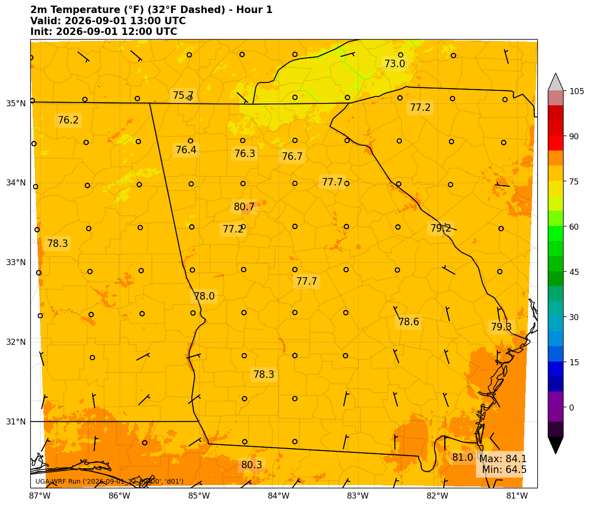

Education
- University of Georgia
- Overall GPA: 3.72
- Bachelor of Computer Science 🔸 Graduating May 2028
- In major GPA: 3.55
- Bachelor of Atmospheric Science 🔸 Graduating May 2028
- In major GPA: 4.00
Honors and Awards
- Best Forecast within the Atmospheric Science Major
- 2025
- Placed #1 at WxChallenge within my class
- 2025
- Deans List
- 2025
Skills
- Extensivly used GitHub; understand fundamental commands, practices (including .env files), GitHub Actions and workflows.
- Traverse Unix and Linux systems and directories; heavily used Emacs to create multi-file Java and C projects.
- Constructed scripts that used REST APIs in Javascript utilzing concepts such as URIs, HTTP requests, error handling, JSON, and rate limiting.
- Experience with front end langauges such as HTML, CSS, Javascript which incoporates testing frameworks like Jasmine.
- Created post-processing WRF and MPAS model output scripts using Python libraries such as Pandas, NumPy, MetPy, MatPlotLib, and Cartopy.
- Debug, compile, and run WRF and MPAS simulations.
- Worked with multiple C files including header and Makefiles.
Leadership and Experience
- UGA WRF Club
- 2024 - Present
- Weather Analyst for Ryan Hall Y'all and Andy Hill
- 2023 - Present
- Winter Weather Briefing to local EMA and faculty
- 2025
Projects
UGA's WRF and MPAS Webpage

- Created post-processing scripts that update the website in real time; displaying various maps and specialized weather charts.
- Worked with compiling and debugging WRF simulations.
- Implemented API calls for backend processes.
Amazon Clone Website
- Created an almost replica of the well known Amazon website; both front and backend development.
- Used HTML, CSS, and Javascript to produce an interactive front end that displays products, carts, and order summary.
- Implemented API calls that calculate cart total and order summary while using safe practicies such as rate limiting and error handling.
Aided in Metereology Research

- Helped in a case study that compared UGA's in house weather model to other models' output during a winter storm.
- Wrote a script that used Pandas, MatPlotLib, and Cartopy libraries to create maps that displayed the differences between UGA's in house weather model and other models' output.
- Final maps were displayed on a peer's award winning poster which was presented at a conference this past summer!